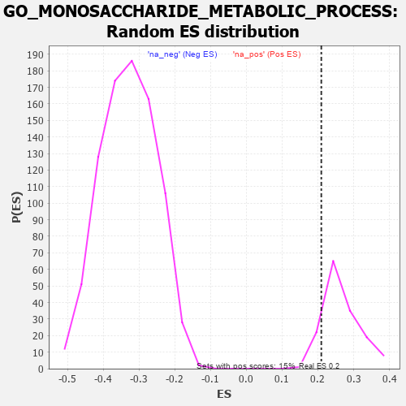

| | | Dataset | 7d |
| Phenotype | NoPhenotypeAvailable |
| Upregulated in class | na_pos |
| GeneSet | GO_MONOSACCHARIDE_METABOLIC_PROCESS |
| Enrichment Score (ES) | 0.20955758 |
| Normalized Enrichment Score (NES) | 0.7891734 |
| Nominal p-value | 0.88 |
| FDR q-value | 0.9168309 |
| FWER p-Value | 1.0 |
Table: GSEA Results Summary
 Fig 1: Enrichment plot: GO_MONOSACCHARIDE_METABOLIC_PROCESS
Fig 1: Enrichment plot: GO_MONOSACCHARIDE_METABOLIC_PROCESS
Profile of the Running ES Score & Positions of GeneSet Members on the Rank Ordered List
| PROBE | GENE SYMBOL | GENE_TITLE | RANK IN GENE LIST | RANK METRIC SCORE | RUNNING ES | CORE ENRICHMENT | | 1 | IRS1 | | | 98 | 1.659 | 0.0522 | Yes |
| 2 | GLB1 | | | 125 | 1.416 | 0.1040 | Yes |
| 3 | TKT | | | 143 | 1.309 | 0.1528 | Yes |
| 4 | GSK3A | | | 351 | 0.745 | 0.1556 | Yes |
| 5 | BRS3 | | | 547 | 0.614 | 0.1548 | Yes |
| 6 | G6PC3 | | | 1026 | 0.478 | 0.1130 | Yes |
| 7 | AKT1 | | | 1040 | 0.476 | 0.1299 | Yes |
| 8 | FOXK2 | | | 1081 | 0.467 | 0.1430 | Yes |
| 9 | G6PC | | | 1121 | 0.459 | 0.1559 | Yes |
| 10 | SRC | | | 1128 | 0.459 | 0.1730 | Yes |
| 11 | GALM | | | 1258 | 0.437 | 0.1737 | Yes |
| 12 | GALT | | | 1363 | 0.416 | 0.1768 | Yes |
| 13 | RPE | | | 1425 | 0.405 | 0.1849 | Yes |
| 14 | GPT | | | 1488 | 0.392 | 0.1923 | Yes |
| 15 | MPI | | | 1555 | 0.382 | 0.1988 | Yes |
| 16 | DDB1 | | | 1642 | 0.366 | 0.2022 | Yes |
| 17 | LRP5 | | | 1769 | 0.342 | 0.1995 | Yes |
| 18 | FOXK1 | | | 1859 | 0.326 | 0.2010 | Yes |
| 19 | PC | | | 1891 | 0.321 | 0.2096 | Yes |
| 20 | GNMT | | | 2261 | 0.266 | 0.1733 | No |
| 21 | OMA1 | | | 2408 | 0.244 | 0.1643 | No |
| 22 | KAT2B | | | 2502 | 0.226 | 0.1614 | No |
| 23 | RORA | | | 2730 | 0.193 | 0.1402 | No |
| 24 | PCK2 | | | 2823 | 0.180 | 0.1356 | No |
| 25 | WDTC1 | | | 2865 | 0.172 | 0.1371 | No |
| 26 | WDR5 | | | 2892 | 0.168 | 0.1403 | No |
| 27 | MAEA | | | 3048 | 0.143 | 0.1263 | No |
| 28 | TIGAR | | | 3091 | 0.138 | 0.1264 | No |
| 29 | COX11 | | | 3256 | 0.113 | 0.1100 | No |
| 30 | FUT8 | | | 3551 | 0.067 | 0.0755 | No |
| 31 | LCMT1 | | | 3576 | 0.063 | 0.0749 | No |
| 32 | RPIA | | | 3813 | 0.026 | 0.0461 | No |
| 33 | DGKQ | | | 3856 | 0.020 | 0.0416 | No |
| 34 | MTOR | | | 4114 | -0.025 | 0.0100 | No |
| 35 | PDX1 | | | 4179 | -0.038 | 0.0034 | No |
| 36 | USF1 | | | 4296 | -0.059 | -0.0089 | No |
| 37 | CRYL1 | | | 4300 | -0.060 | -0.0070 | No |
| 38 | ADPGK | | | 4567 | -0.109 | -0.0364 | No |
| 39 | NISCH | | | 4568 | -0.109 | -0.0321 | No |
| 40 | CLK2 | | | 4628 | -0.124 | -0.0347 | No |
| 41 | DCXR | | | 4766 | -0.151 | -0.0462 | No |
| 42 | XYLB | | | 4811 | -0.160 | -0.0455 | No |
| 43 | DHDH | | | 4876 | -0.172 | -0.0469 | No |
| 44 | EP300 | | | 4941 | -0.186 | -0.0477 | No |
| 45 | CPT1A | | | 5467 | -0.311 | -0.1020 | No |
| 46 | GALK2 | | | 5476 | -0.313 | -0.0908 | No |
| 47 | ACTN3 | | | 5486 | -0.315 | -0.0797 | No |
| 48 | GALE | | | 5567 | -0.338 | -0.0767 | No |
| 49 | PGM1 | | | 5593 | -0.342 | -0.0665 | No |
| 50 | G6PD | | | 5638 | -0.358 | -0.0582 | No |
| 51 | TKFC | | | 5854 | -0.419 | -0.0690 | No |
| 52 | GALK1 | | | 5953 | -0.455 | -0.0637 | No |
| 53 | PGM2 | | | 6137 | -0.515 | -0.0668 | No |
| 54 | INSR | | | 6204 | -0.538 | -0.0542 | No |
| 55 | RGN | | | 6233 | -0.547 | -0.0364 | No |
| 56 | FGGY | | | 6517 | -0.669 | -0.0461 | No |
| 57 | DYRK2 | | | 6533 | -0.677 | -0.0217 | No |
| 58 | GSK3B | | | 6719 | -0.768 | -0.0152 | No |
| 59 | NPY1R | | | 6732 | -0.776 | 0.0135 | No |
| 60 | PASK | | | 7946 | -3.674 | 0.0032 | No |
Table: GSEA details [plain text format]

Fig 2: GO_MONOSACCHARIDE_METABOLIC_PROCESS: Random ES distribution
Gene set null distribution of ES for GO_MONOSACCHARIDE_METABOLIC_PROCESS